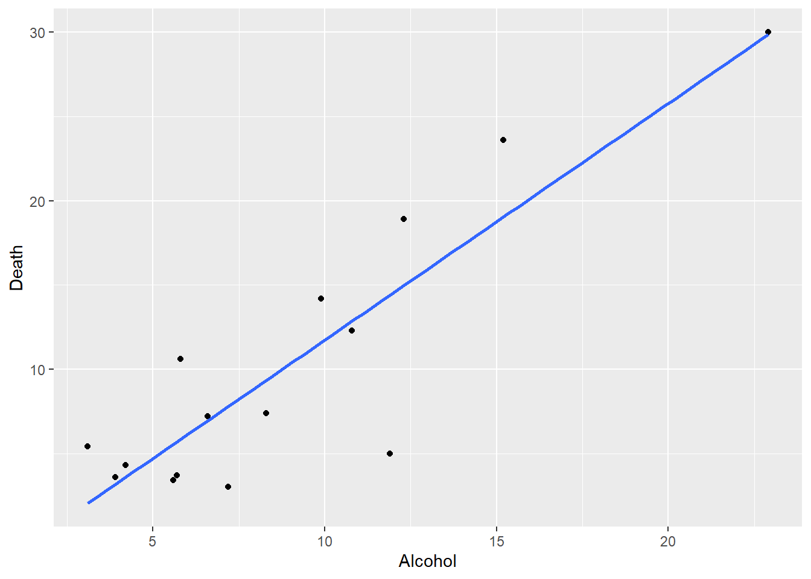
Chapter 6:
Models with a Single Predictor
What is a statistical model?
OBSERVATION = FIT + RESIDUAL
FIT- to explain systematic (non-random) variation in the data
RESIDUAL - to explain random variation in the data
What is a statistical model?
OBSERVATION = FIT + RESIDUAL
- With paired (related) data (X,Y)
- Two variables: one (Y) is random (response) and the other (X) is considered fixed (predictor)
- Interested in the functional relationship between these two variables
- \(Y=f(X)\)
- predict Y, given X
What is a statistical model?
OBSERVATION = FIT + RESIDUAL
- With paired (related) data (X,Y)
- Fitted Model: \(\hat{Y}=a+bX\) (True Model: \(Y=\alpha+\beta X+\epsilon\))
- residual error: \(e= Y-\hat{Y}\) (\(\epsilon\) is not the same as \(e\))
- While fitting models to data
- it is required fit the model to the data as closely as possible (e.g. using least squares technique)
- we need to make residuals free of patterns or trends.
- we assume a probability distribution of residuals for statistical inference.
Predict Y, given X
- A regression equation is a function that indicates how the average value of one response variable for given values of one or more predictor variables varies with these predictor variables; that is, \(E(Y|X_1, X_2, ..., X_k)\)
Simple regression
The term simple means there is a single predictor
The fitted model remains as: \(\hat{Y}=a+bX_{i}\)
The method of least squares is employed to obtain the estimates \(a\) and \(b\)
- The sum of squared residuals is minimized in the least squares method.
Rregression outputs are bulky
LEARN HOW TO INTERPRET THE REGRESSION OUTPUTS
Example (Alcohol consumption data)
country Alcohol Death
1 22.9 30.0
2 15.2 23.6
3 12.3 18.9
4 11.9 5.0
5 10.8 12.3
6 9.9 14.2
7 8.3 7.4
8 7.2 3.0
9 6.6 7.2
10 5.8 10.6
11 5.7 3.7
12 5.6 3.4
13 4.2 4.3
14 3.9 3.6
15 3.1 5.4Plot of Alcohol consumption data

Plot of Alcohol consumption data

\(min \left( \sum_{i=1}(y_{i}-\hat{y_{i}})^2 \right)\) - \(i\) number of observations - \(y_{i}\) observed value of y - \(\hat{y_{i}}\) predicted value of y
R Base Output

Call:
lm(formula = Death ~ Alcohol, data = cirrhosis)
Residuals:
Min 1Q Median 3Q Max
-9.3966 -1.9639 0.2479 2.9884 4.7716
Coefficients:
Estimate Std. Error t value Pr(>|t|)
(Intercept) -2.318 2.065 -1.123 0.282
Alcohol 1.405 0.202 6.954 1e-05 ***
---
Signif. codes: 0 '***' 0.001 '**' 0.01 '*' 0.05 '.' 0.1 ' ' 1
Residual standard error: 3.942 on 13 degrees of freedom
Multiple R-squared: 0.7881, Adjusted R-squared: 0.7718
F-statistic: 48.35 on 1 and 13 DF, p-value: 1.001e-05- Let us
tidyit.
Fitted model and testing its coefficients
library(broom)
tidy(mod1) |> mutate_if(is.numeric, round, 3) -> out1
library(kableExtra)
kable(out1, caption = "t-tests for model parameters") %>%
kable_classic(full_width = F)| term | estimate | std.error | statistic | p.value |
|---|---|---|---|---|
| (Intercept) | -2.318 | 2.065 | -1.123 | 0.282 |
| Alcohol | 1.405 | 0.202 | 6.954 | 0.000 |
Focus on the model, its coefficients
- Are these coefficient estimates meaningful in the context?
Types of residuals
raw or ordinary residual is just (observation-fit)
Standardized Residual= Residual/Std.Dev of residualThe regression model is influenced by outliers or unusual points because the slope estimate of the regression line is sensitive to these outliers.
So we define
Studentised or deleted t ResidualSimilar to Standardized Residual without the observation under consideration. That is,
- Studentised residual = residual/std. dev of residual (after omitting the particular observation).

Assumptions
Model forming assumptions
- \(X\) is known without error
- \(Y\) is linearly related to \(X\)
- There is a random variability of \(Y\) about this line

Assumptions
More assumptions to form \(t\) and \(F\) statistics:
- Variability in \(Y\) about the line is constant and independent of \(X\) variable.
- The variability of \(Y\) about the line follows normal distribution.
- The distribution of \(Y\) given \(X = X_i\) is independent of \(Y\) given \(X = X_j\).
Residuals and assumptions
- Most assumptions are on the errors (residuals)
- independent
- normal
- random
- Is there a pattern in my residuals?
- Do they suggest what to do?
Residual plot for Alcohol~deaths model
- For small sample sizes, residual diagnostics is difficult
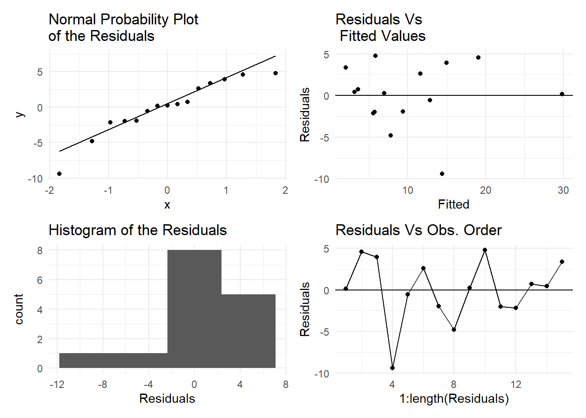
Residual plot for Alcohol~deaths model
par(mfrow=(c(2,2)))
plot(mod1)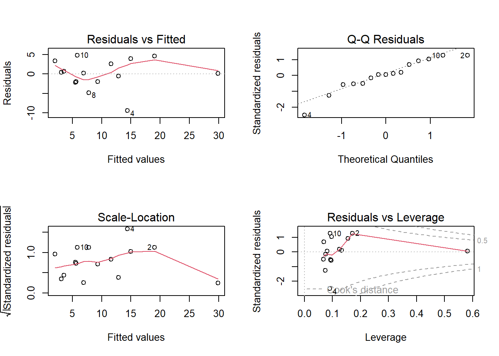
Residuals showing need for transformation
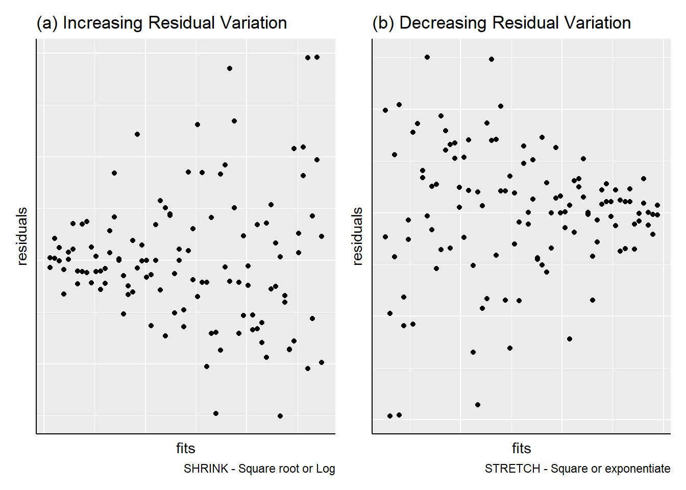
Adding more predictors
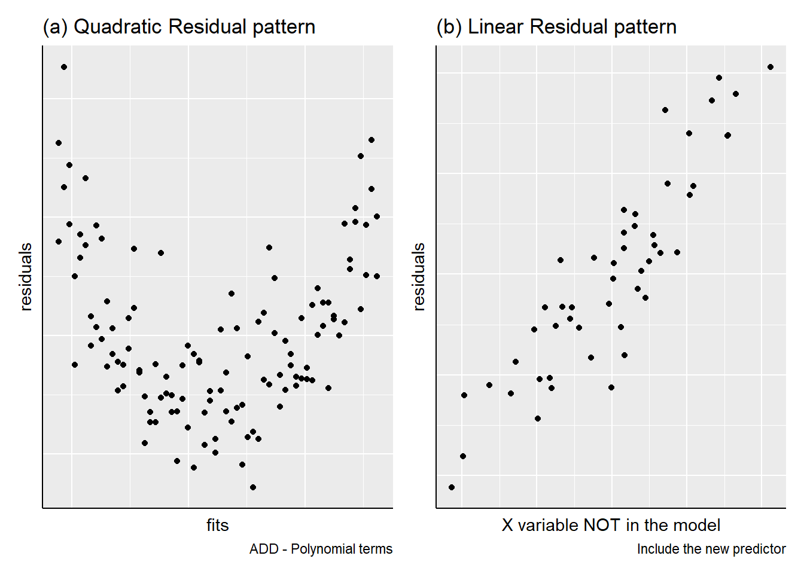
Subgrouping patterns
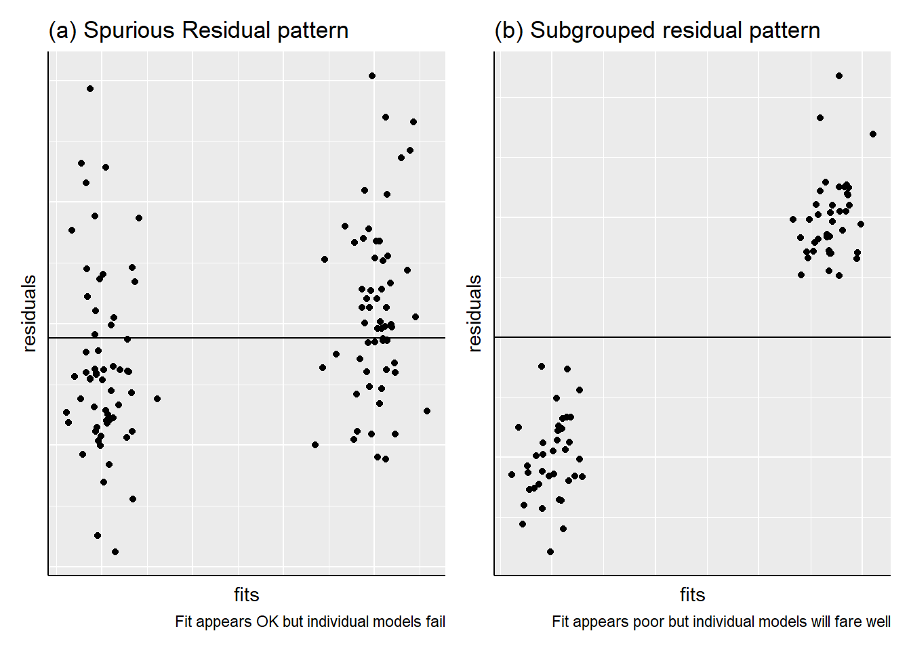
Outliers
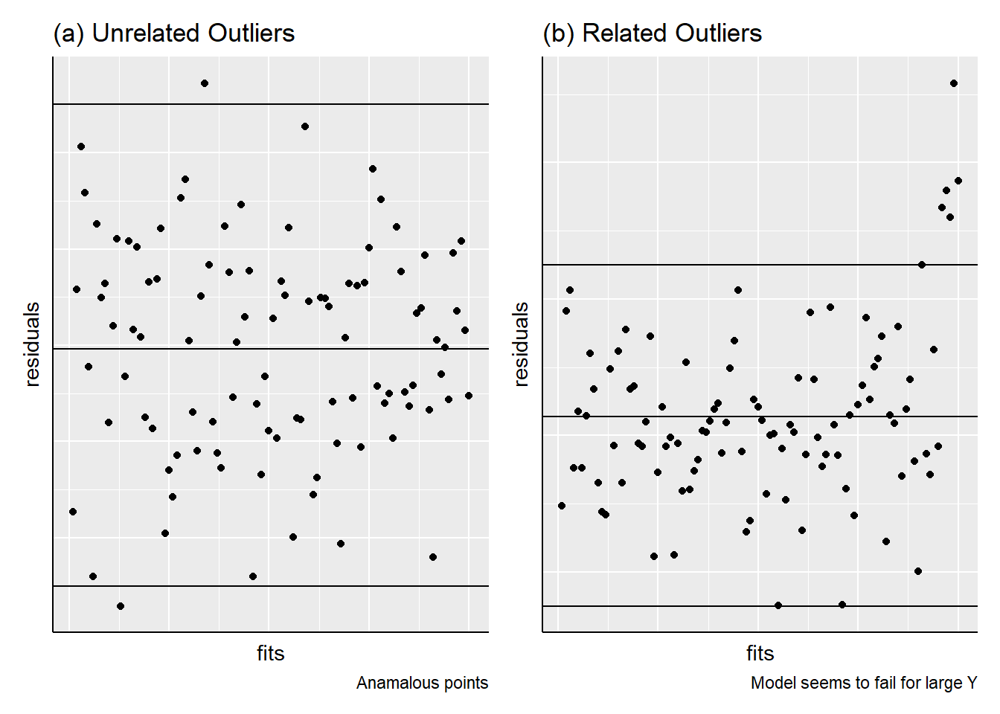
Autocorrelation
- Neighbouring residuals depend on each other
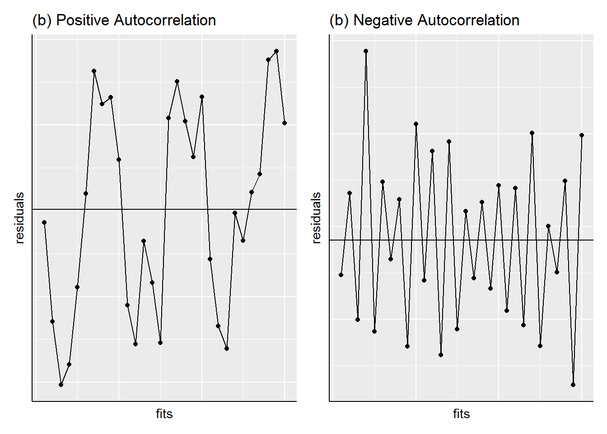
Improving simple regression
- Use a different predictor or explanatory variable
- Transform the \(Y\) variable
- Add other explanatory variables to the model (next week)
- Deletion of invalid (as opposed to outlier) observations
- Reconsider the linear relationship
Tests of significance
library(broom)
tidy(mod1) |> mutate_if(is.numeric, round, 3) -> out1
library(kableExtra)
kable(out1, caption = "t-tests for model parameters") %>%
kable_classic(full_width = F)| term | estimate | std.error | statistic | p.value |
|---|---|---|---|---|
| (Intercept) | -2.318 | 2.065 | -1.123 | 0.282 |
| Alcohol | 1.405 | 0.202 | 6.954 | 0.000 |
- $t$ tests of intercept and slope
- $H_0=true~slope=0$; $H_0=true~intercept=0$
- For `Alcohol~deaths` model, the slope is significant
but not the interceptModel quality measures
summary(mod1)
Call:
lm(formula = Death ~ Alcohol, data = cirrhosis)
Residuals:
Min 1Q Median 3Q Max
-9.3966 -1.9639 0.2479 2.9884 4.7716
Coefficients:
Estimate Std. Error t value Pr(>|t|)
(Intercept) -2.318 2.065 -1.123 0.282
Alcohol 1.405 0.202 6.954 1e-05 ***
---
Signif. codes: 0 '***' 0.001 '**' 0.01 '*' 0.05 '.' 0.1 ' ' 1
Residual standard error: 3.942 on 13 degrees of freedom
Multiple R-squared: 0.7881, Adjusted R-squared: 0.7718
F-statistic: 48.35 on 1 and 13 DF, p-value: 1.001e-05Model summary (or Quality) measures
\(R^2\) is the proportion of variation explained by the fitted model
- A meaningful model must have at least 50% \(R^2\)
- A large \(R^2\) is important to explain the relationship(s)
Residual standard deviation (error) \(S\) has to be small
- How small? Difficult to say. Compare \(S\) with the overall spread in \(Y\) or with the mean of \(Y\)
- A small \(S\) is important for prediction
Model quality measures
out1 <- glance(mod1) |>
select(r.squared, sigma, statistic, p.value) |>
mutate_if(is.numeric, round, 2)
out1 |> t() |>
kable(caption = "Model summary measures") |>
kable_classic(full_width = T) | r.squared | 0.79 |
| sigma | 3.94 |
| statistic | 48.35 |
| p.value | 0.00 |
ANOVA \(F\)-test
mod1 <- lm(Death ~ Alcohol, data=cirrhosis)
summary(mod1)
Call:
lm(formula = Death ~ Alcohol, data = cirrhosis)
Residuals:
Min 1Q Median 3Q Max
-9.3966 -1.9639 0.2479 2.9884 4.7716
Coefficients:
Estimate Std. Error t value Pr(>|t|)
(Intercept) -2.318 2.065 -1.123 0.282
Alcohol 1.405 0.202 6.954 1e-05 ***
---
Signif. codes: 0 '***' 0.001 '**' 0.01 '*' 0.05 '.' 0.1 ' ' 1
Residual standard error: 3.942 on 13 degrees of freedom
Multiple R-squared: 0.7881, Adjusted R-squared: 0.7718
F-statistic: 48.35 on 1 and 13 DF, p-value: 1.001e-05anova(mod1)Analysis of Variance Table
Response: Death
Df Sum Sq Mean Sq F value Pr(>F)
Alcohol 1 751.44 751.44 48.353 1.001e-05 ***
Residuals 13 202.03 15.54
---
Signif. codes: 0 '***' 0.001 '**' 0.01 '*' 0.05 '.' 0.1 ' ' 1mod1.aov <- aov(Death ~ Alcohol, data=cirrhosis)
summary(mod1.aov) Df Sum Sq Mean Sq F value Pr(>F)
Alcohol 1 751.4 751.4 48.35 1e-05 ***
Residuals 13 202.0 15.5
---
Signif. codes: 0 '***' 0.001 '**' 0.01 '*' 0.05 '.' 0.1 ' ' 1- For the straight line model, the F-test is equivalent to testing the hypothesis that the true slope is zero.
ANOVA \(F\)-test
- Significant F ratio need not always imply that the
straight line is the best fit to the data.
- For `Alcohol~deaths` model, the $F$ statistic is
significant which means that the fitted model explains significant variationout1 <- anova(mod1) |> tidy() |> mutate_if(is.numeric, round, 2)
options(knitr.kable.NA = " ")
kable(out1, caption = "ANOVA table") |>
kable_classic(full_width = F) | term | df | sumsq | meansq | statistic | p.value |
|---|---|---|---|---|---|
| Alcohol | 1 | 751.44 | 751.44 | 48.35 | 0 |
| Residuals | 13 | 202.03 | 15.54 |
ANOVA table construction
Each source has an associated degrees of freedom.
For regression, DF = \(1\) as there are two parameters \(a\) and \(b\) fitted in the model
For total, DF = \(n-1\) since there are n observations
For error, DF = by subtraction = \((n-1)-1 = n-2\)
Mean Square (MS) values are obtained as MS = SS/DF
F ratio for regression =MS(Regression)/MS(Error)
F ratio follows the \(F\) distribution with \((1, n-2)\) d.f and provides the significance of the model fitted.
- the ratio of two sample variances (or MS) follows the \(F\) distribution (normal case)
Prediction
- The predicted response at value \(x=x_0\) is obtained using the fitted regression equation.
- Confidence & prediction intervals can also be constructed.
- Note that prediction intervals are for individual observations whereas the confidence intervals are for the expected (mean) response for a given \(x_0\)
predict(mod1, new = data.frame(Alcohol=10), interval="confidence", level =0.95) fit lwr upr
1 11.72778 9.476416 13.97915predict(mod1, new = data.frame(Alcohol=10), interval="prediction", level =0.95) fit lwr upr
1 11.72778 2.918701 20.53686Outlier effect on regression
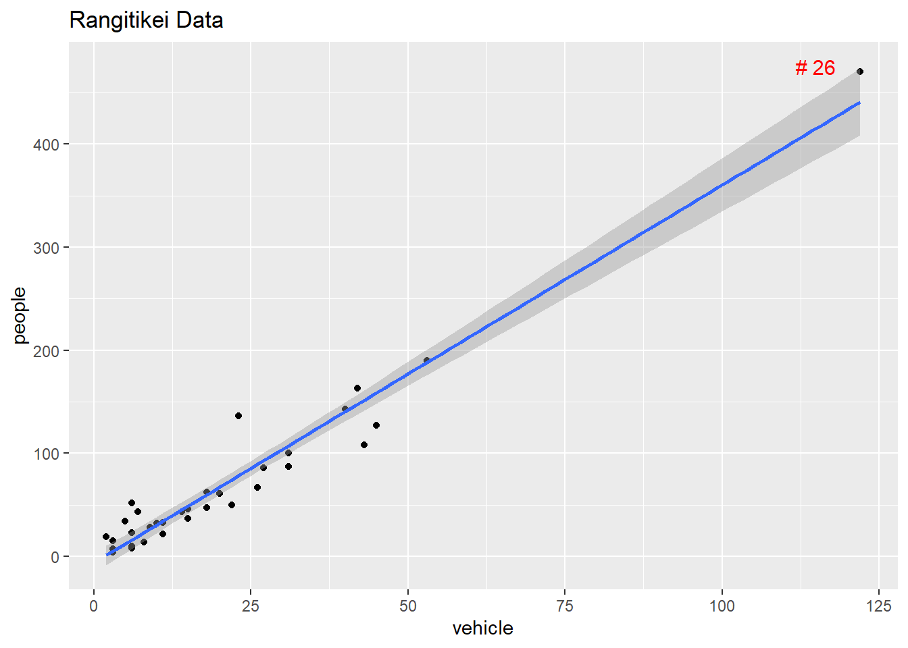
Leverage and Cook’s distance

A distant \(x\) value has a higher leverage.
- This leverage is often measured by the \(h_{ii}\) or
hivalue - Check \(h_{ii}\) > \(\frac{3p}{n}\) or not
- This leverage is often measured by the \(h_{ii}\) or
Influence of a point on the regression is measured using the Cook’s distance \(D_i\)
- related to difference between the regression coefficients with and without the \(i^{th}\) data point.
- \(D_{i} >0.7\) can be deemed as being influential (for \(n>15\))
Leverage and Cook’s distance

Tukey Line
Also called Median-median line, Resistant line or Rline
Advantages:
- Easy to fit
- Outlier or peculiar values do not affect Rline to the extent they influence a regression lineRline fitting
- Sort the values of X first and copy the corresponding Y values
- Divide the X values equally into three groups with corresponding Y values
- Compute the medians of the X values from the lowest and the uppermost subgroups, and the corresponding medians of Y values
- The resistant line is then fitted with these two median points (x median and y median)
Example (Alcohol consumption data)
- Obtain the estimated slope using low and upper group median pairs as \(b = (18.9-3.7)/(12.3-4.2) = 1.88\).
- Obtain the y-intercept using either the low or upper group median points \(a = Y-bX = 3.7-1.88*4.2 = -4.2\).

R function
line(cirrhosis$Death,cirrhosis$Alcohol)
Call:
line(cirrhosis$Death, cirrhosis$Alcohol)
Coefficients:
[1] 4.0797 0.4379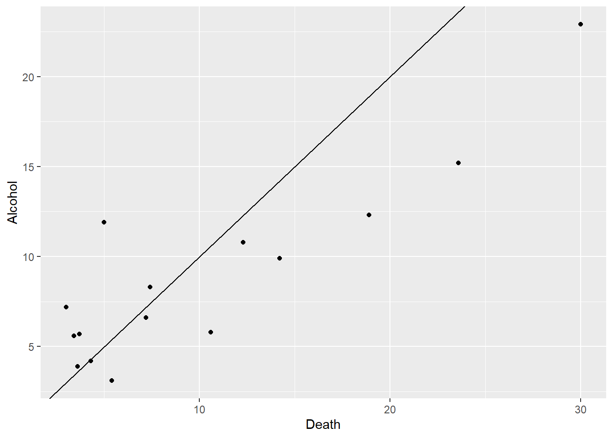
The line() function gives a slightly different slope & intercept.
Two more Robust models
We can also fit a robust linear model using the functions MASS::rlm() robustbase::lmrob().
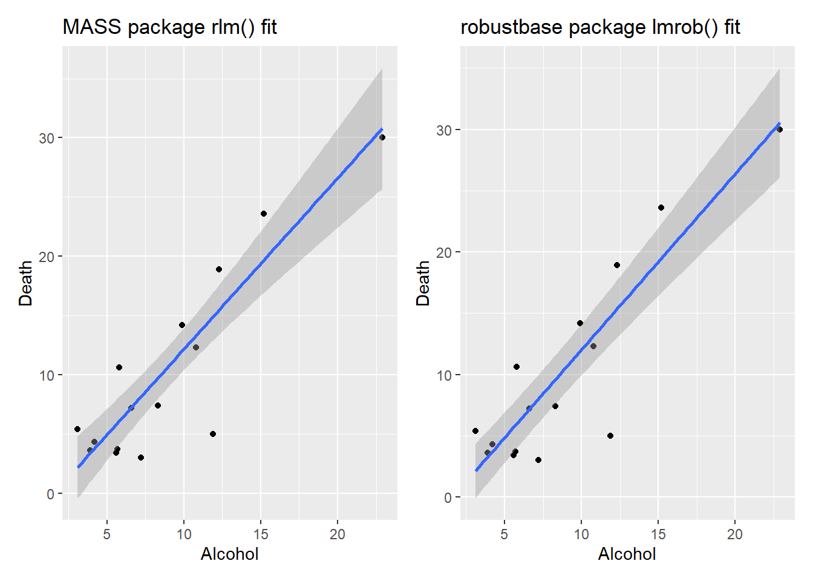
Cross Validation (CV)
Split the sample data randomly into k (equal) folds (parts) by resampling.
Fit the model for \((k − 1\)) folds of the data
Predict for the omitted fold
Compare prediction errors
Root mean square error (RMSE) is often used
R has many packages for cross validation
Example (Alcohol consumption data)
library(caret); library(MASS, exclude = "select")
set.seed(123)
fitControl <- trainControl(method = "repeatedcv", number = 5, repeats = 100)
lmfit <- train(Death ~Alcohol, data= cirrhosis,
trControl = fitControl, method="lm")
lm.rmses <- lmfit$resample[,1]
rlmfit <- train(Death ~Alcohol, data = cirrhosis,
trControl=fitControl, method = "rlm")
rlm.rmses <- rlmfit$resample[,1]
dfm <- cbind.data.frame(lm.rmses,rlm.rmses)
library(patchwork)
qplot(data=dfm, lm.rmses, geom="boxplot") /
qplot(data=dfm, rlm.rmses, geom="boxplot")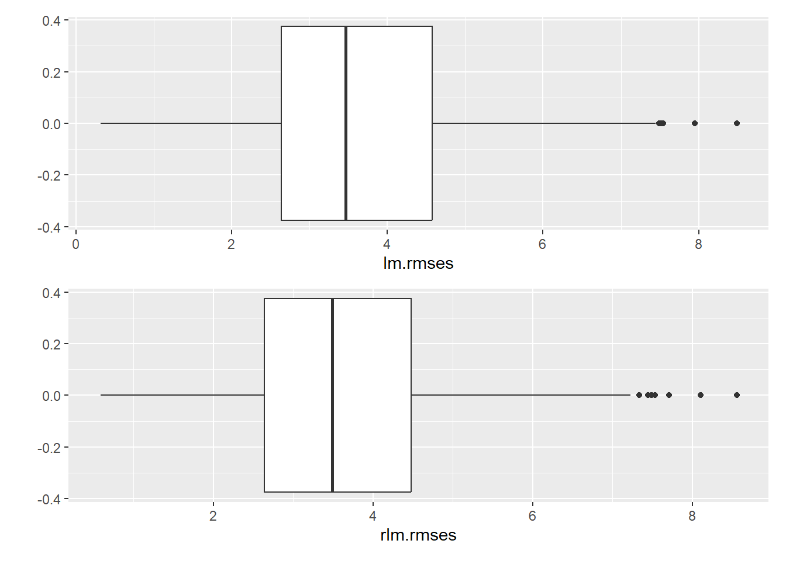
Choosing the best model
- The
bestmodel is not decided purely on statistical grounds. - If the main aim is to describe relationships, include all the relevant variables.
- If the main aim is to predict, prefer the simplest feasible (parsimonious) model with smaller number of predictors.
- Examine the literature to discover similar examples, see how they are tackled, discuss the matter with the researcher etc.
Main points
Concepts and practical skills you should have at the end of this chapter:
- Understand and be able to perform a simple linear regression on bivariate related data sets
- Use scatter plots or other appropriate plots to visualize the data and regression line
- Summarize regression results and appropriate tests of significance. Interpret these results in context of your data
- Examine residual diagnostic plots and test assumptions, then perform appropriate transformations as necessary
- Use a regression line to predict new data and explain confidence and prediction intervals
- Understand and explain the concepts of robust regression modeling, Tukey Line, and cross-validation.